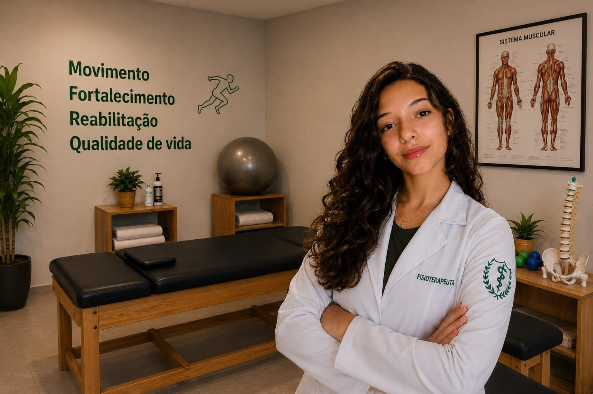
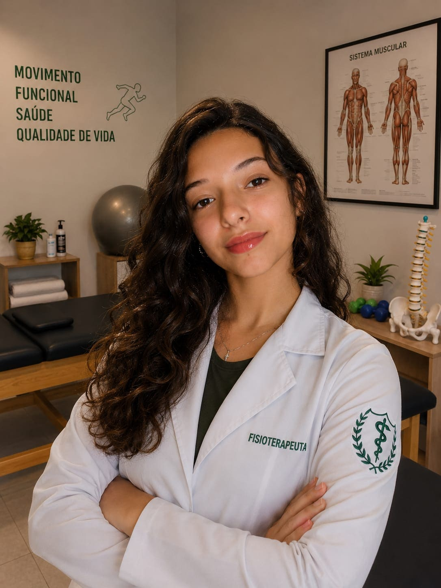
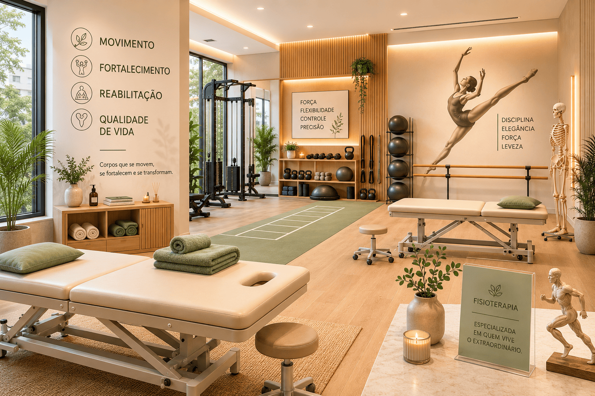

Eu sou Lorena F. Beltrame

Name: Lorena Faria Beltrame
Profile: Fisioterapeuta
Email: contact@example.com
Phone: (617) 557-0089
Habilidades:
Sobre mim:
Formada em Fisioterapia pela Universidade de São Paulo, sou é especializada na recuperação de atletas,com foco especial em bailarinas que sofreram lesões e desejam retornar à performance com segurança e confiança. Unindo conhecimento técnico, atendimento humanizado e compreensão das exigências físicas da dança, seu trabalho é voltado para a reabilitação funcional, prevenção de novas lesões e fortalecimento do corpo, respeitando a individualidade e os objetivos de cada paciente.
Desde pequena, ela encontrou na dança uma forma de expressão, disciplina e superação. Apaixonada pelo movimento, dedicou anos à prática da dança, até que uma lesão no tornozelo mudou sua trajetória. O período de recuperação trouxe desafios físicos e emocionais, mas também despertou um novo propósito: ajudar outras pessoas a recuperarem sua qualidade de vida e voltarem a fazer o que amam.
Foi durante a fisioterapia que nasceu sua vocação profissional. Encantada pelo impacto que o cuidado, a reabilitação e o acompanhamento humanizado podem causar, decidiu transformar sua própria experiência em profissão. Hoje, como fisioterapeuta, une conhecimento técnico, empatia e vivência pessoal para compreender profundamente as dificuldades enfrentadas por atletas, bailarinos e pacientes em processo de recuperação. Mais do que tratar dores, minha missão é devolver confiança, movimento e liberdade para que cada pessoa possa retornar às atividades que fazem parte da sua história.
Resumo
Transformando movimento em qualidade de vida.
Sumary
Lorena Faria Beltrame
Sou fisioterapeuta com formação especializada em reabilitação, prevenção de lesões e Pilates Clínico, atuo no atendimento de atletas, bailarinos e pessoas que buscam recuperar sua funcionalidade e bem-estar. Meu objetivo é oferecer um tratamento individualizado, baseado em evidências científicas e focado nas necessidades de cada paciente.
- Sâo Paulo, Brasil
- (123) 456-7891
- contact@example.com
Formação
Formada na Universidade de São Paulo
2017-2022
Especializada em ortopedia
Fisioterapia esportiva de alta performace e reabilitação de bailarinos e atletas
Pós-graduação & Pilates clinico
2022-2024
Pós-graduação em Pilates Clínico focada em reabilitação, fortalecimento muscular e prevenção de lesões.
Exeperiencia proficional
Fisioterapeuta
- Hospital São Lucas — Fisioterapeuta Reabilitação pós-operatória e tratamento ortopédico.
- Clínica Performance Esportiva — Fisioterapeuta Esportiva Prevenção e recuperação de lesões em atletas.
- Studio Balance de Dança — Fisioterapeuta Tratamento especializado para bailarinas lesionadas.
- Centro Vida & Movimento — Fisioterapeuta Funcional Atendimento funcional para idosos e pacientes ortopédicos.
Serviços
Cuidando do seu corpo para que você alcance seu melhor desempenho.
Fisioterapia Esportiva
Prevenção e reabilitação de lesões para atletas amadores e profissionais. Foco em retornar às atividades no menor tempo possível e melhorar o desempenho físico.
Reeducação Postural
Tratamento individualizado para desvios na coluna, escoliose e dores crônicas, restabelecendo o equilíbrio muscular e a consciência corporal.
Coordenação Motora
Exercícios terapêuticos focados no aprimoramento da coordenação motora fina e grossa, ritmo e equilíbrio corporal. Essencial para a recuperação de funções motoras pós-lesões, desenvolvimento infantil ou manutenção da agilidade na terceira idade.
Fisioterapia Ortopédica
Tratamento especializado para disfunções ósseas e musculares, como tendinites, fraturas, entorses e reabilitação pós-operatória.
Pilates Clínico
Exercícios direcionados para o fortalecimento do core, ganho de flexibilidade e estabilização da coluna, adaptados para a sua condição física.
Fortalecimento Funcional
Exercícios personalizados para o ganho de força, resistência e estabilidade articular. Ideal para proteger a coluna e as articulações, prevenir lesões recorrentes e preparar o corpo para as demandas do dia a dia ou do esporte.

pacientes
Lesões
Fortalecimento
Treinamentos personalizados
Preços
Da reabilitação à performance, acompanhamos cada passo da sua jornada
Serviço
Valor por sessão
Serviço
Valor por sessão
Tratamento de Lesões
R$180.00
Treinamento de Equilíbrio
R$150.00
Treinamento de Coordenação Motora
R$150.00
Reabilitação Funcional
R$180.00
Reeducação Postural
R$160.00
Pilates Clínico
R$140.00
Perguntas frequentes Movimento, Fortalecimento, Reabilitação
1. Quanto tempo dura uma sessão?
As sessões têm duração média de 50 a 60 minutos, dependendo da necessidade de cada paciente.
2. Preciso de encaminhamento médico?
Não. Você pode agendar uma avaliação fisioterapêutica diretamente.
3. Vocês atendem atletas e bailarinos?
Sim. Temos foco na prevenção, tratamento e reabilitação de lesões esportivas e da dança.
4. O Pilates Clínico é indicado para quem?
O Pilates Clínico é recomendado para pessoas que buscam melhorar a postura, fortalecer a musculatura, prevenir lesões e auxiliar na recuperação física.